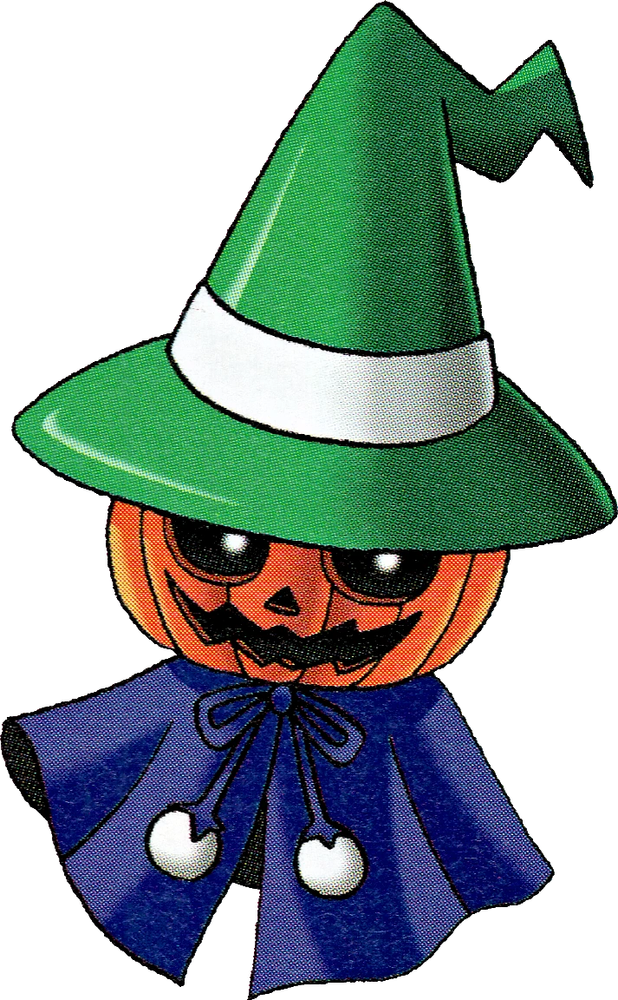

Jack-o'-Lantern
Arcano: El Mago (The Magician) | Elemento: Fuego (Agi)

Origen y Mitología
La leyenda de Jack-o'-Lantern proviene del folclore irlandés, específicamente de la historia de "Stingy Jack" (Jack el Tacaño). Según la leyenda, Jack era un granjero astuto y avaro que engañó al diablo en repetidas ocasiones. Cuando Jack murió, Dios no le permitió entrar al cielo debido a su vida de pecado, y el diablo tampoco lo dejó entrar al infierno porque lo había humillado.
Condenado a vagar por la tierra, Jack solo tenía un carbón ardiendo para iluminar su camino, el cual colocó dentro de un nabo ahuecado. Con el tiempo, en América, el nabo se sustituyó por la calabaza, dando origen a las famosas calabazas talladas de Halloween. En la saga Persona, Jack-o'-Lantern es representado como un espíritu travieso con una calabaza en llamas por cabeza.
"¡Je, je, je! ¡El fuego es mi juego! ¡Agi!"
Estadísticas de Combate
Al ser un Persona de nivel intermedio, Jack-o'-Lantern tiene un mayor potencial mágico que Jack Frost, aunque es más frágil físicamente:
| Atributo | Valor | Descripción |
|---|---|---|
| Nivel | 15 | Nivel inicial de invocación. |
| Fuerza | 9 | Ataque físico básico. |
| Magia | 14 | Poder de los hechizos de fuego. |
| Resistencia | 7 | Defensa contra ataques físicos. |
| Agilidad | 11 | Velocidad y evasión. |
| Suerte | 10 | Probabilidad de golpes críticos. |
Habilidades y Afinidades
Su especialidad es incinerar a los enemigos. Estas son sus habilidades más destacadas:
- Agi: Ataque ligero de fuego a un enemigo.
- Maragi: Ataque ligero de fuego a todos los enemigos.
- Fire Boost: Aumenta el daño de los ataques de fuego en un 25%.
- Rakunda: Reduce la defensa de un enemigo durante 3 turnos.
Debilidades y Resistencias
Conocer sus puntos débiles es crucial para mantenerlo en combate:
- Resistente a: Fuego.
- Débil contra: Hielo (Bufu).
¿Quieres saber más?
Puedes descubrir más sobre la leyenda original que inspiró a este Persona en el siguiente enlace: La leyenda de Jack-o'-Lantern en Wikipedia.